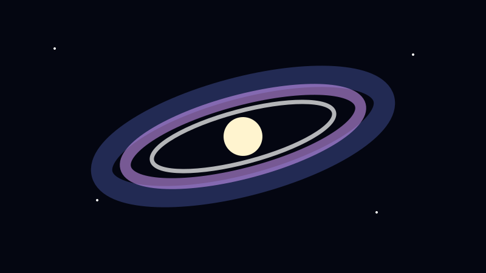
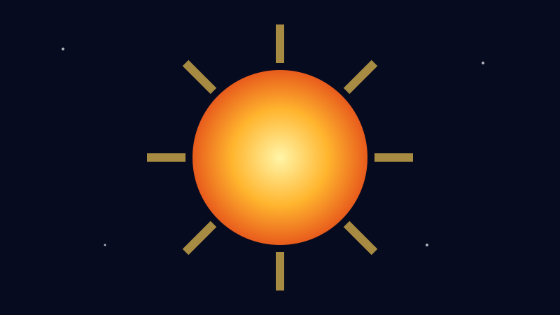

DEEP SPACE
🌌 Alam Semesta
Semakin jauh melihat, semakin banyak hal aneh dan menakjubkan yang ditemukan.

🌠 Galaksi
Kumpulan besar bintang, gas, debu, dan materi lain yang terikat gravitasi.
☁️ Nebula
Awan gas dan debu antarbintang yang penting dalam siklus hidup bintang.

🕳️ Lubang Hitam
Wilayah ruang-waktu dengan gravitasi ekstrem.

💥 Supernova
Peristiwa ledakan bintang yang sangat energik.
🌑 Materi Gelap
Komponen yang tidak memancarkan cahaya tetapi diduga berpengaruh melalui gravitasi.
✨ Energi Gelap
Istilah untuk komponen misterius yang dikaitkan dengan percepatan ekspansi alam semesta.
🌌 Bima Sakti
Galaksi tempat Tata Surya berada.
💡 Tahun Cahaya
Satuan jarak yang berarti jarak yang ditempuh cahaya dalam satu tahun.